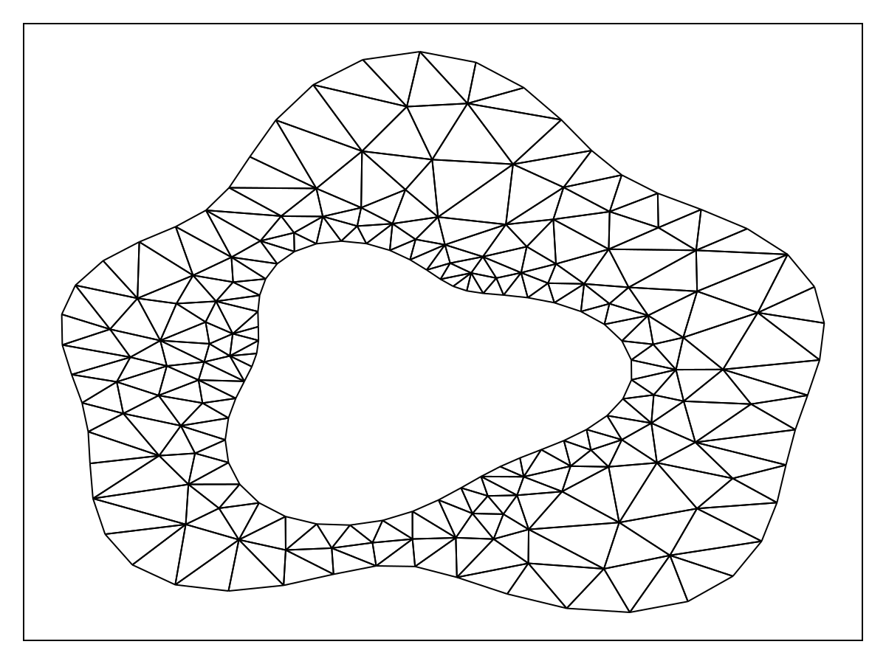
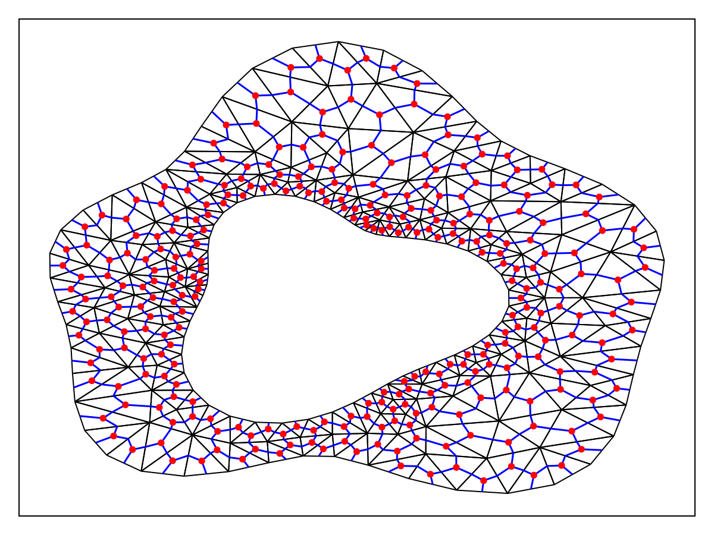
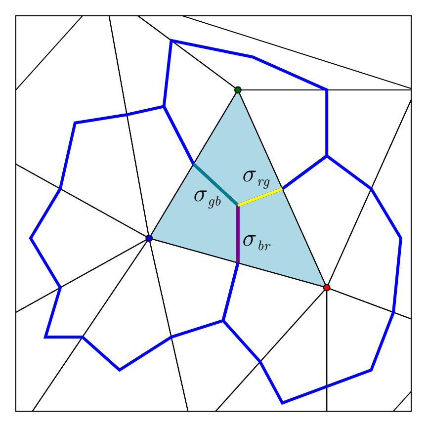
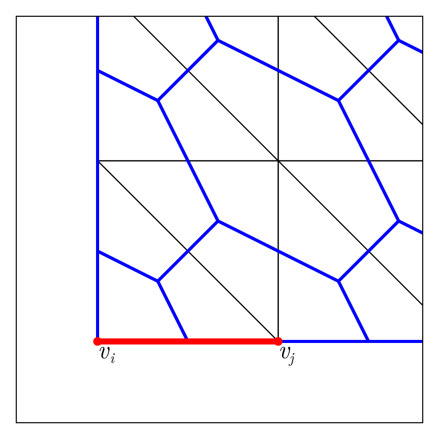

Mathematical and Implementation Details
- Mathematical and Implementation Details
- Interior Discretisation
- Boundary Conditions
- Internal Conditions
- Putting Everything Together
- Systems of Equations
- Steady-State Problems
Here we outline the mathematical and implementation details involved in implementing the finite volume method (FVM). We assume that our partial differential equation (PDE) is given by
\[\begin{equation} \label{eq:pde} \pdv{u(\vb x, t)}{t} + \div \vb q(\vb x, t, u) = S(\vb x, t, u), \quad \vb x \in \Omega, \end{equation}\]
together with some boundary conditions or internal conditions that we discuss later. We also discuss steady-state problems and systems of PDEs of the form \eqref{eq:pde}.
Interior Discretisation
Let us start by discretising \eqref{eq:pde} inside $\Omega$. The first step in this discretisation is to compute a triangulation of $\Omega$, decomposing $\Omega$ into a collection of disjoint triangles $\{T_k\}$ so that
\[\Omega = \bigcup_k T_k.\]
This triangulation is typically a constrained Delaunay triangulation, denoted $\mathcal T(\Omega)$, with appropriate care taken if $\Omega$ is multiply-connected; these triangulations can be computed using DelaunayTriangulation.jl. An example of such a domain $\Omega$ and its triangulation $\mathcal T(\Omega)$ is shown below, where we use a multiply-connected domain to emphasise that these details are not necessarily restricted to simple domains.
Control volumes
Key to the FVM are the control volumes, which are used to define volumes $\Omega_i$ around individual vertices $\vb x_i$ that we integrate the PDE over. To define these volumes, take $\vb x_i \in \Omega$, which is a vertex of $\mathcal T(\Omega)$, and take the set of triangles $\mathcal T_i = \{T_k\}$ that have $\vb x_i$ as a vertex. For each of these triangles $T_{k'} \in \mathcal T_i$, connect its centroid to the midpoints of the triangle's edges. Once this procedure is complete, we obtain a closed polygon around $\vb x_i$ that we denote by $\partial\Omega_i$ and whose interior defines the control volume $\Omega_i$. We show the result of this procedure, applied to the above domain, below, where we show the centroids in red and the control volume boundaries in blue.
Let us now establish some notation for referring to these control volumes, using the figure below as a reference.
| Symbol | Description | Example |
|---|---|---|
| $\vb x_i$ | A vertex of $\mathcal T(\Omega)$ | The blue point below |
| $\Omega_i$ | The control volume around $\vb x_i$ | The green region below |
| $\partial\Omega_i$ | The boundary of $\Omega_i$ | The blue edges below |
| $V_i$ | The volume of $\Omega_i$ | The volume of the green region below |
| $\mathcal E_i$ | The set of edges of $\partial\Omega_i$ | The blue edges below |
| $\sigma$ | An edge $\sigma \in \mathcal E_i$ | The magenta edge below. Note that $\bigcup_{\sigma \in \mathcal E_i} \sigma = \partial\Omega_i$ |
| $\vb x_{\sigma}$ | The midpoint of $\sigma \in \mathcal E_i$ | The blue point below on $\sigma$ |
| $\hat{\vb n}_{\sigma}$ | The outward unit normal vector to $\sigma \in \mathcal E_i$ | The black arrow below |
| $\mathcal T_i$ | The set of triangles that have $\vb x_i$ as a vertex | The black triangles surrounding $\vb x_i$ below |
| $L_\sigma$ | The length of $\sigma \in \mathcal E_i$ | The length of the magenta edge below |
Discretising the PDE
Now that we have our concept of control volumes, we can discretise the PDE \eqref{eq:pde}. We do this by considering each PDE inside each $\Omega_i$ and integrating. For a given control volume $\Omega_i$, we can integrate the PDE to give
\[\begin{equation}\label{eq:integratedi} \dv{t}\iint_{\Omega_i} u\dd{V} + \iint_{\Omega_i} \div\vb q \dd{V} = \iint_{\Omega_i} S \dd{V}. \end{equation}\]
Using the divergence theorem, the second integral in \eqref{eq:integratedi} becomes
\[\begin{equation}\label{eq:applieddthm} \iint_{\Omega_i} \div\vb q = \oint_{\partial\Omega_i} \vb q \vdot \vu n_\sigma \dd{s} = \sum_{\sigma \in \mathcal E_i} \int_\sigma \vb q \vdot \vu n_\sigma \dd{s}, \end{equation}\]
where the last equality in \eqref{eq:applieddthm} follows from integrating over each individual line segment that defines $\partial\Omega_i$, which is simply $\mathcal E_i$. We then define the control volume averages,
\[\begin{equation}\label{eq:averages} \bar u_i = \frac{1}{V_i}\iint_{\Omega_i} u\dd{V},\quad \bar S_i = \frac{1}{V_i}\iint_{\Omega_i} S\dd{V}, \end{equation}\]
so that our integral formulation \eqref{eq:integratedi} becomes
\[\begin{equation}\label{eq:intform} \dv{\bar u_i}{t} + \frac{1}{V_i}\sum_{\sigma\in\mathcal E_i}\int_\sigma \vb q \vdot \vu n_\sigma \dd{s} = \bar S_i. \end{equation}\]
Note that \eqref{eq:intform} is still an exact expression.
To proceed, we need to approximate the integrals $\int_\sigma \vb q \vdot \vu n_\sigma\dd{s}$. To accomplish this, we use a midpoint rule, writing
\[\begin{equation}\label{eq:midpt_rule} \int_\sigma \vb q \vdot \vu n_\sigma \dd{s} \approx \left[\vb q(\vb x_\sigma, t, u(\vb x_\sigma, t))\vdot \vu n_\sigma\right]L_\sigma. \end{equation}\]
Then, replacing the control volume averages with their value at $\vb x_i$, we obtain the following approximation:
\[\begin{equation}\label{eq:nextapprox} \dv{u_i}{t} + \frac{1}{V_i}\sum_{\sigma\in\mathcal E_i} \left[\vb q(\vb x_\sigma, t, u(\vb x_\sigma, t)) \vdot \vu n_\sigma\right]L_\sigma = S_i, \end{equation}\]
where $u_i = u(\vb x_i, t)$ and $S_i = S(\vb x_i, t)$.
The final step in this part of the approximation is the evaluation of $\vb q(\vb x_\sigma, t, u(\vb x_\sigma, t))$. To deal with this function, consider some $T_k \in \mathcal T_i$ so that $\vb x_\sigma$ is inside $T_k$. We use a linear shape function inside $T_k$ to approximate $u$, writing
\[\begin{equation}\label{eq:shape} u(\vb x, t) = \alpha_kx + \beta_ky + \gamma_k, \quad \vb x \in T_k, \end{equation}\]
where we have suppressed the dependence of the coefficients $(\alpha_k, \beta_k,\gamma_k)$ on $t$. The vertices of $T_k$ are given by $v_{k1}, v_{k2}, v_{k3}$ with corresponding coordinates $\vb x_{k1}, \vb x_{k2}, \vb x_{k3}$, respectively. We can then solve for the coefficients in \eqref{eq:shape} by requiring that $u$ is equal to the values at the vertices of $T_k$, giving the system of equations
\[\begin{equation}\label{eq:near_cramer} \begin{aligned} u(\vb x_{k1}, t) &= \alpha_kx_{k1} + \beta_ky_{k1} + \gamma_k, \\ u(\vb x_{k2}, t) &= \alpha_kx_{k2} + \beta_ky_{k2} + \gamma_k, \\ u(\vb x_{k3}, t) &= \alpha_kx_{k3} + \beta_ky_{k3} + \gamma_k, \end{aligned} \end{equation}\]
where $\vb x_{ki} = (x_{ki}, y_{ki})^{\mkern-1.5mu\mathsf{T}}$. Note that the values on the left-hand side of \eqref{eq:near_cramer} are all known from either the initial condition or the previous time-step. Using Cramer's rule, we define
\[\begin{equation}\label{eq:shape_coeffs} \vb S_k = \frac{1}{\Delta_k}\begin{bmatrix} y_{k2}-y_{k3} & y_{k3}-y_{k1} & y_{k1}-y_{k2} \\ x_{k3} - x_{k2} & x_{k1}-x_{k3}&x_{k2}-x_{k1} \\ x_{k2}y_{k3}-x_{k3}y_{k2} & x_{k3}y_{k1}-x_{k1}y_{k3}&x_{k1}y_{k2}-x_{k2}y_{k1} \end{bmatrix}, \end{equation}\]
where
\[\begin{equation}\label{eq:deltak} \Delta_k = x_{k1}y_{k2}-x_{k2}y_{k1}-x_{k1}y_{k3}+x_{k3}y_{k1}+x_{k2}y_{k3}-x_{k3}y_{k2}, \end{equation}\]
and thus we obtain
\[\begin{equation}\label{eq:shapecoeffvals} \begin{aligned} \alpha_k &= s_{k,11}u_{k1} + s_{k,12}u_{k2} + s_{k,13}u_{k3}, \\ \beta_k &= s_{k,21}u_{k1} + s_{k,22}u_{k2} + s_{k,23}u_{k3}, \\ \gamma_k &= s_{k,31}u_{k1} + s_{k,32}u_{k2} + s_{k,33}u_{k3}, \end{aligned} \end{equation}\]
where $u_{ki} = u(\vb x_{ki}, t)$ and $s_{k,ij}$ are the elements of $\vb S_k$. With \eqref{eq:shape} and \eqref{eq:shapecoeffvals}, we can approximate $\vb q(\vb x_\sigma, t, u(\vb x_\sigma, t))$ and thus obtain the approximation
\[\begin{equation}\label{eq:interiorapproximation} \dv{u_i}{t} + \frac{1}{V_i}\sum_{\sigma\in\mathcal E_i} \left[\vb q\left(\vb x_\sigma, t, \alpha_{k(\sigma)}x_\sigma + \beta_{k(\sigma)}y_\sigma + \gamma_{k(\sigma)}\right)\vdot \vu n_\sigma\right]L_\sigma = S_i, \end{equation}\]
where $k(\sigma)$ is the index of the triangle that contains $\vb x_\sigma$. This linear shape function also allows us to compute gradients like $\grad u(\vb x_\sigma, t)$, since $\grad u(\vb x_\sigma, t) = (\alpha_{k(\sigma)}, \beta_{k(\sigma)})^{\mkern-1.5mu\mathsf{T}}$.
Boundary Conditions
Let us now discuss how boundary conditions (BCs) are handled. We assume that BCs take on any of the following forms:
\[\begin{align} \vb q(\vb x, t, u) \vdot \vu n_\sigma &= a(\vb x, t, u) & \vb x \in \mathcal B \subseteq \partial\Omega, \label{eq:neumann} \\ \dv{u(\vb x, t)}{t} &= a(\vb x, t, u) & \vb x \in \mathcal B \subseteq \partial\Omega, \label{eq:dudtdirichlet} \\ u(\vb x, t) &= a(\vb x, t, u) & \vb x \in \mathcal B \subseteq \partial\Omega, \label{eq:dirichlet} \end{align}\]
where the functions $a$ are user-provided functions. The conditions \eqref{eq:neumann}–\eqref{eq:dirichlet} are called Neumann, time-dependent Dirichlet, and Dirichlet, respectively. We discuss how we handle incompatible BCs below, and then how each of these three types are implemented.
Dirichlet boundary conditions
When we have a Dirichlet BC of the form \eqref{eq:dirichlet}, the implementation is simple: Rather than using \eqref{eq:interiorapproximation}, we instead leave $\mathrm du_i/\mathrm dt = 0$ and update the value of $u_i$ with $a(\vb x_i, t, u_i)$ at the end of the iteration using a callback; note that the expression $u_i = a(\vb x_i, t, u_i)$ is not an implicit equation for $u_i$, rather it is simply a reassignment of $u_i$ to $a(\vb x_i, t, u_i)$, i.e. $u_i \leftarrow a(\vb x_i, t, u_i)$.
Time-dependent Dirichlet boundary conditions
For a time-dependent Dirichlet BC of the form \eqref{eq:dudtdirichlet}, the implementation is again simple: Rather than using \eqref{eq:interiorapproximation}, simply compute $\mathrm du_i/\mathrm dt = a(\vb x_i, t, u_i)$ instead.
Neumann boundary conditions
Neumann boundary conditions \eqref{eq:neumann} are the most complex out of the three. Let us return to our integral formulation \eqref{eq:intform}. Let $\mathcal E_i^n$ be the set of edges in $\mathcal E_i$ that have a Neumann BC associated with them, and $\mathcal E_i^c = \mathcal E_i \setminus \mathcal E_i^n$. Then, also using \eqref{eq:interiorapproximation}, in the case of \eqref{eq:neumann} we can write
\[\begin{equation}\label{eq:neumanndecomp} \dv{u_i}{t} + \frac{1}{V_i}\sum_{\sigma\in \mathcal E_i^c} \left[\vb q(\vb x_\sigma, t, \alpha_{k(\sigma)}x_\sigma + \beta_{k(\sigma)}y_\sigma + \gamma_{k(\sigma)}) \vdot \vu n_\sigma\right]L_\sigma + \frac{1}{V_i}\sum_{\sigma\in\mathcal E_i^n} \int_{\sigma} a_{\sigma}(\vb x, t, u)\dd{s} = S_i, \end{equation}\]
where $a_\sigma$ is the BC function associated with $\sigma$. This integral is then approximated using a midpoint rule as done previously, giving
\[\begin{equation}\label{eq:neumanndecompapprox} \dv{u_i}{t} + \frac{1}{V_i}\sum_{\sigma\in \mathcal E_i^c} \left[\vb q(\vb x_\sigma, t, u(\vb x_\sigma, t)) \vdot \vu n_\sigma\right]L_\sigma + \frac{1}{V_i}\sum_{\sigma\in\mathcal E_i^n} \left[a_{\sigma}(\vb x_\sigma, t, u(\vb x_\sigma, t))\right]L_\sigma = S_i, \end{equation}\]
where $u(\vb x_\sigma, t) = \alpha_{k(\sigma)}x_\sigma + \beta_{k(\sigma)}y_\sigma + \gamma_{k(\sigma)}$.
Internal Conditions
We also allow for specifying internal conditions, meaning conditions of the form \eqref{eq:neumann}–\eqref{eq:dirichlet} that are applied away from the boundary. We do not currently allow for internal Neumann conditions directly.[1] These conditions are handled in the same way as BCs, except that the user is to provide them per-vertex rather than per-edge.
Putting Everything Together
We have now specified how we discretise the PDE itself, and how we handle both boundary and internal conditions. The remaining task is to actually discuss how we compute $\mathrm du_i/\mathrm dt$. As written, \eqref{eq:interiorapproximation} indicates that we loop over each vertex and, within each vertex, loop over each edge of its control volume. On average, $|\mathcal E_i^c| = 12$ (since, on average, a point in a Delaunay triangulation has six neighbours), and so computing $\mathrm du_i/\mathrm dt$ for each $i$ requires $\mathcal O(12n)$ loop iterates and many repeated computations (since each control volume edge appears in another control volume), where $n$ is the number of points in the mesh. An alternative approach is to instead loop over each triangle in $\mathcal T(\Omega)$ and to then loop over each edge, adding the contributions from each to the associated vertices. This instead requires $\mathcal O(3|\mathcal T|)$ loop iterates, where $|\mathcal T|$ is the number of triangles in $\mathcal T(\Omega)$, and we instead only need to compute the relevant quantities for each control volume edge a single time; note that $|\mathcal T| = \mathcal O(n)$ by Euler's formula. This is the approach we take in our implementation.
Let us think about how we can instead loop over each triangle. Consider an interior control volume, shown below.
We denote the triangle in blue by $T$, and refer to the blue, red, and green vertices by $v_b$, $v_r$, and $v_g$, respectively. The relevant edges that contribute to $\mathrm du_b/\mathrm dt$, $\mathrm du_r/\mathrm dt$, and $\mathrm du_g/\mathrm dt$ are $\sigma_{br}$, $\sigma_{rg}$, and $\sigma_{gb}$, as annotated above. In particular, $\sigma_{br}$ contributes to both $\mathrm du_b/\mathrm dt$ and $\mathrm du_r/\mathrm dt$, $\sigma_{rg}$ contributes to both $\mathrm du_r/\mathrm dt$ and $\mathrm du_g/\mathrm dt$, and $\sigma_{gb}$ contributes to both $\mathrm du_g/\mathrm dt$ and $\mathrm du_b/\mathrm dt$.
Let us focus on $u_b$ and $u_r$. The contribution from $e_{br}$ to $\mathrm du_b/\mathrm dt$ and $\mathrm du_r/\mathrm dt$ is given by:
\[\begin{equation}\label{eq:triangleupdate} \begin{aligned} \dv{u_b}{t} &\leftarrow \dv{u_b}{t} - Q, \\ \dv{u_r}{t} & \leftarrow \dv{u_r}{t} + Q, \end{aligned} \end{equation}\]
where
\[Q = \left[\vb q\left(\vb x_{br}, t, \alpha x_{br} + \beta y_{br} + \gamma\right) \vdot \vu n_{br}\right]L_{br},\]
and $\vb x_{br}$ is the midpoint of $e_{br}$; $\vu n_{br}$ is the unit normal vector to the edge $\sigma_{br} = \overrightarrow{\vb x_{br}\vb x_T}$, where $\vb x_T$ is the centroid of $T$ which should only be computed once for the current $T$, which should point away from $\vb x_b$ but towards $\vb x_r$; $L_{br} = \|\vb x_T - \vb x_{br}\|$, and $\alpha,\beta,\gamma$ are computed from \eqref{eq:shapecoeffvals} using the vertices of $T$. Notice that \eqref{eq:triangleupdate} uses a minus sign for $\mathrm du_b/\mathrm dt$ and a plus sign for $\mathrm du_r/\mathrm dt$, because we have brought the sum in \eqref{eq:interiorapproximation} to the right-hand side of the equation.
When we apply the procedure above to each triangle, we will have computed the contribution from each edge to each vertex - almost. The only issue is with boundary triangles, where the edges that lie on the boundary will not be iterated over as they not of the form $\overrightarrow{\vb x_{br}\vb x_T}$ (i.e., they are not connected to a centroid). There are two ways to handle this:
- For each triangle looped over, also check if it is a boundary triangle and then consider its boundary edges.
- After looping over all triangles, loop over all boundary edges to pick up the missing contributions.
The second approach is preferable, as we don't need to worry about needless checks for boundary triangles, the number of boundary edges it has, etc.
To understand how to pick up contributions from a single edge, consider the figure below which shows some control volumes in the corner of a domain:
Consider the edge $e_{ij}$ shown in red. There two control volumes that lie on $e_{ij}$, the one for $v_i$ and the other for $v_j$. We denote the midpoint of $e_{ij}$ by $\vb x_{ij} = (\vb x_i + \vb x_j)/2$, so that the two control volume edges are $\overrightarrow{\vb x_i\vb x_{ij}}$ and $\overrightarrow{\vb x_{ij}\vb x_j}$ for $v_i$ and $v_j$, respectively. The contributions from the flux over each edge gives
\[\begin{equation}\label{eq:bndedgecontrbi} \begin{aligned} \dv{u_i}{t} &\leftarrow \dv{u_i}{t} - Q_i, \\[6pt] \dv{u_j}{t} &\leftarrow \dv{u_j}{t} - Q_j, \\[6pt] \end{aligned} \end{equation}\]
where
\[\begin{equation}\label{eq:bndedgecontrbiflux} \begin{aligned} Q_i &= \left[\vb q\left(\vb m_i, t, \alpha_{ij} m_{ix} + \beta_{ij} m_{iy} + \gamma_{ij}\right) \vdot \vu n_{ij}\right]L_i, \\ Q_j &= \left[\vb q\left(\vb m_j, t, \alpha_{ij} m_{jx} + \beta_{ij} m_{jy} + \gamma_{ij}\right) \vdot \vu n_{ij}\right]L_j, \end{aligned} \end{equation}\]
where $\vb m_i = (\vb x_i + \vb x_{ij})/2 = (m_{ix}, m_{iy})^{\mkern-1.5mu\mathsf{T}}$, $\vb m_j = (\vb x_{ij} + \vb x_j)/2 = (m_{jx}, m_{jy})^{\mkern-1.5mu\mathsf{T}}$, $\vb n_{ij}$ is the outward unit normal vector to $e_{ij}$, $L_i = \|\vb x_{ij} - \vb x_i\|$, $L_j = \|\vb x_j - \vb x_{ij}\|$, and $\alpha_{ij}, \beta_{ij}, \gamma_{ij}$ are computed from \eqref{eq:shapecoeffvals} using the vertices of the triangle that contains $e_{ij}$. If there is a Neumann boundary condition on $e_{ij}$, \eqref{eq:bndedgecontrbiflux} uses the boundary condition functions for computing the $\vb q \vdot \vu n$ terms.
Now that we have looped over all triangles and also over all boundary edges, the final values for each $\mathrm du_i/\mathrm dt$ is given by
\[\dv{u_i}{t} \leftarrow \frac{1}{V_i}\dv{u_i}{t} + S(\vb x_i, t, u_i).\]
Of course, if there is a Dirichlet boundary condition at $u_i$ we set $\mathrm du_i/\mathrm dt = 0$, and if there is a boundary condition on $\mathrm du_i/\mathrm dt$ we use that boundary condition instead.
Systems of Equations
We also provide support for systems of PDEs that take the form
\[\begin{equation}\label{eq:system} \begin{aligned} \pdv{u_1(\vb x, t)}{t} + \div \vb q_1(\vb x, t, u_1, \ldots, u_n) &= S_1(\vb x, t, u_1, \ldots, u_n), \\ \pdv{u_2(\vb x, t)}{t} + \div \vb q_2(\vb x, t, u_1, \ldots, u_n) &= S_2(\vb x, t, u_1, \ldots, u_n), \\ &\vdots \\ \pdv{u_n(\vb x, t)}{t} + \div \vb q_n(\vb x, t, u_1, \ldots, u_n) &= S_n(\vb x, t, u_1, \ldots, u_n), \end{aligned} \end{equation}\]
where any of the divergences and source terms may also depend on the other variables $u_1,\ldots,u_n$. We can write this as,
\[\begin{equation}\label{eq:systemsim} \pdv{\vb u(\vb x, t)}{t} + \div \vb Q(\vb x, t, \vb u) = \vb S(\vb x, t, \vb u), \end{equation}\]
where
\[\begin{equation}\label{eq:sysdef} \begin{aligned} \vb u(\vb x, t) &= \begin{bmatrix} u_1(\vb x, t) \\ u_2(\vb x, t) \\ \vdots \\ u_n(\vb x, t) \end{bmatrix} \in \mathbb R^{n \times 1}, \\\vb Q(\vb x, t, \vb u) &= \begin{bmatrix} \vb q_1(\vb x, t, \vb u) & \vb q_2(\vb x, t, \vb u) & \cdots & \vb q_n(\vb x, t, \vb u) \end{bmatrix} \in \mathbb R^{2 \times n}, \\\vb S(\vb x, t, \vb u) &= \begin{bmatrix} S_1(\vb x, t, \vb u) \\ S_2(\vb x, t, \vb u) \\ \vdots \\ S_n(\vb x, t, \vb u) \end{bmatrix} \in \mathbb R^{n \times 1}, \end{aligned} \end{equation}\]
and the divergence $\div \vb Q$ is defined as
\[\begin{equation}\label{eq:divdef} \div \vb Q(\vb x, t, \vb u) = \begin{bmatrix} \div \vb q_1(\vb x, t, \vb u) \\ \div \vb q_2(\vb x, t, \vb u) \\ \vdots \\ \div\vb q_n(\vb x, t, \vb u) \end{bmatrix} \in \mathbb R^{n \times 1}. \end{equation}\]
The method we use for solving these equations is basically the same as what we do for a single PDE. Letting $\vb u_i = \vb u(\vb x_i, t)$ and $\vb S_i = \vb S(\vb x_i, t)$, the analogous approximation to \eqref{eq:interiorapproximation} is
\[\begin{equation}\label{eq:sysapproxint} \dv{u_i}{t} + \frac{1}{V_i}\sum_{\sigma\in\mathcal E_i} \left[\vb Q\left(\vb x_\sigma, t, t, \boldsymbol\alpha_{k(\sigma)}x_\sigma + \boldsymbol\beta_{k(\sigma)}y_\sigma + \boldsymbol\gamma_k\right)^{\mkern-1.5mu\mathsf{T}}\vu{n}_\sigma\right]L_\sigma = \vb S_i, \end{equation}\]
where $\boldsymbol\alpha_{k(\sigma)}$, $\boldsymbol\beta_{k(\sigma)}$, and $\boldsymbol\gamma_k$ are the vectors of coefficients from \eqref{eq:shapecoeffvals}, e.g.
\[\boldsymbol\alpha_{k(\sigma)} = s_{k(\sigma),11}\vb u_{k1} + s_{k(\sigma),12}\vb u_{k2} + s_{k(\sigma),13}\vb u_{k3}.\]
where $\vb u_{ki} = \vb u(\vb x_{ki}, t)$ and $s_{k(\sigma),ij}$ are the elements of $\vb S_{k(\sigma)}$. The only difference between \eqref{eq:sysapproxint} and \eqref{eq:interiorapproximation} is that we now have a vector of PDEs rather than a single PDE. The procedure for computing the contribution from each edge is the same as before, except that we now have to loop over each PDE in the system. In the code, we use a FVMSystem type to represent a system of PDEs, constructed by providing a vector of FVMProblems. The FVMSystem replaces the initial conditions with a matrix initial condition, where the ith column refers to the ith component of the system.
Steady-State Problems
We provide support for steady-state problems, in which case \eqref{eq:pde} (and similarly for \eqref{eq:system}) becomes
\[\begin{equation} \div \vb q(\vb x, t, u) = S(\vb x, t, \vb u). \end{equation}\]
This is solved in exactly the same way, except rootfinding is used and there is no timestepping.
- 1This is a technical limitation due to how the control volumes are defined. For vertices away from the boundary, the control volume edges do not lie along any of the triangle's edges, which is where we would like to impose Neumann conditions.